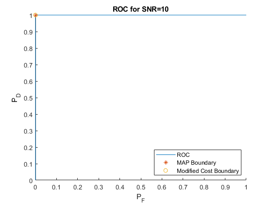
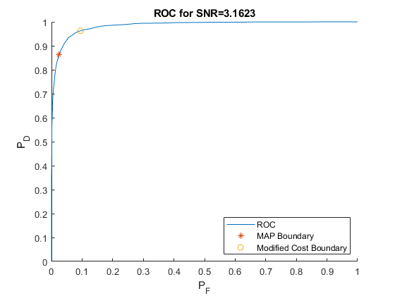
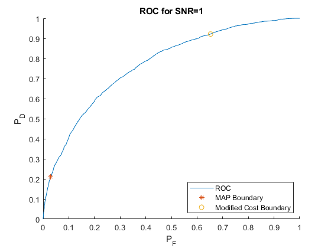
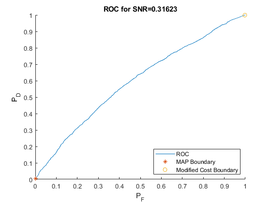
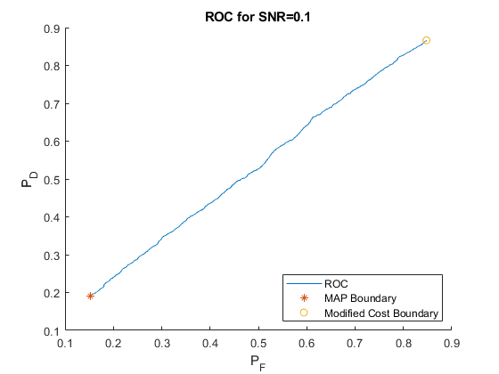
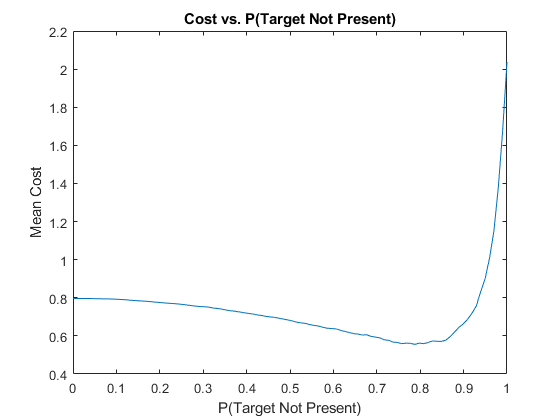
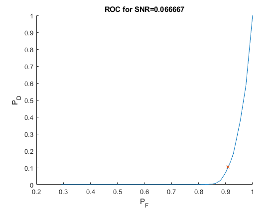
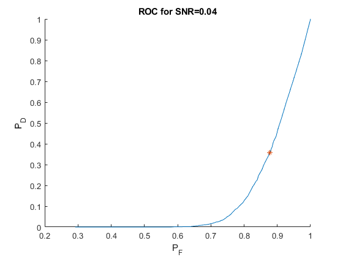
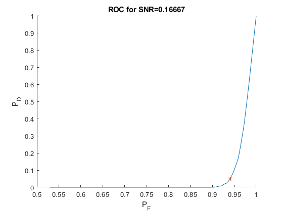
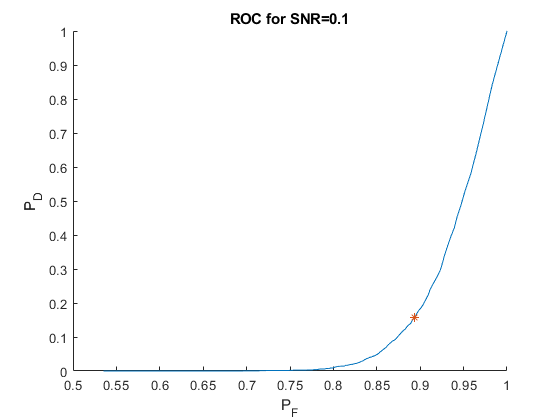

Contents
clc
clear
close all
Constants
NUM_ITERATIONS = 1e4;
SZ = [ 1, NUM_ITERATIONS ];
PROB_NOT_PRESENT = 0.8;
PROB_PRESENT = 1 - PROB_NOT_PRESENT;
A = 1;
var = 0.5;
sig = sqrt(var);
BOUNDARY = A/2 + ( sig^2/A )*log( PROB_NOT_PRESENT / (1-PROB_NOT_PRESENT) );
Part A
q1a_Y = genTarget( A, PROB_NOT_PRESENT, SZ );
q1a_X = normrnd( 0, sig, SZ );
q1a_Y_noise = q1a_X+q1a_Y;
q1a_Y_hat = gaussianMAP( q1a_Y_noise, A, BOUNDARY );
q1a_error_experimental = calcProbError( q1a_Y, q1a_Y_hat );
q1a_error_theoretical = qfunc( BOUNDARY / sig ) * PROB_NOT_PRESENT ...
+ qfunc( (A-BOUNDARY) / sig ) * PROB_PRESENT;
Part B & C
q1b_etas = linspace(-10,10,1000);
q1b_sig = logspace(-1, 1, 5);
q1b_Y = genTarget( A, PROB_NOT_PRESENT, SZ );
P_D = zeros( length(q1b_etas),1 );
P_F = zeros( length(q1b_etas),1 );
for i = 1:length(q1b_sig)
sig_temp = q1b_sig(i);
q1b_X = normrnd( 0, sig_temp, SZ );
q1b_Y_noise = q1b_X+q1b_Y;
q1b_boundary = A/2 + ( sig_temp^2/A ) * ...
log( PROB_NOT_PRESENT / (1-PROB_NOT_PRESENT) );
q1c_boundary = A/2 + ( sig_temp^2/A ) * ...
log( PROB_NOT_PRESENT / (10*(1-PROB_NOT_PRESENT) ));
[~, q1b_ind] = min( abs( q1b_etas-q1b_boundary ) );
[~, q1c_ind] = min( abs( q1b_etas-q1c_boundary ) );
for j = 1:length(q1b_etas)
q1b_Y_hat = gaussianMAP( q1b_Y_noise, A, q1b_etas(j) );
P_D(j) = sum( (q1b_Y_hat == A) & (q1b_Y == A) ) / sum(q1b_Y == A);
P_F(j) = sum( (q1b_Y_hat == A) & (q1b_Y == 0) ) / sum(q1b_Y == 0);
end
figure();
hold on;
plot( P_F, P_D, 'DisplayName', 'ROC' );
plot( P_F(q1b_ind), P_D(q1b_ind), '*', ...
'DisplayName', 'MAP Boundary' );
plot( P_F(q1c_ind), P_D(q1c_ind), 'o', ...
'DisplayName', 'Modified Cost Boundary' );
hold off;
xlabel( "P_F" );
ylabel( "P_D" );
title( "ROC for SNR=" + A/sig_temp );
legend( 'Location', 'SouthEast' );
end
    
Part D
priors_not_present = linspace(0,1,1e2);
q1d_cost = zeros( length(priors_not_present), 1 );
q1d_Y = genTarget( A, PROB_NOT_PRESENT, SZ );
q1d_X = normrnd( 0, sig, SZ );
q1d_Y_noise = q1d_X+q1d_Y;
for i = 1:length(priors_not_present)
q1d_boundary = A/2 + ( sig^2/A ) * ...
log( priors_not_present(i) / (10*(1-priors_not_present(i))) );
q1d_Y_hat = gaussianMAP( q1d_Y_noise, A, q1d_boundary );
q1d_cost(i) = 10*mean( (q1d_Y_hat == 0) & (q1d_Y == A) ) + ...
mean( (q1d_Y_hat == A) & (q1d_Y == 0) );
end
figure();
plot( priors_not_present, q1d_cost );
xlabel( "P(Target Not Present)" );
ylabel( "Mean Cost" );
title( "Cost vs. P(Target Not Present)" );

Part E Part 1
sig_z = linspace(0.1, 1, 10);
SZ_Z = size(sig_z);
q1e_Y = genTarget( A, PROB_NOT_PRESENT, SZ );
q1e_X = normrnd( 0, sig, SZ );
q1e_Z = normrnd( 0, sig_z, SZ_Z );
q1e_Y_noise = (q1e_X+A).*(q1e_Y == A) + ...
(q1e_Z.'+A).*(q1e_Y == 0);
q1e_boundary = log( sig*PROB_NOT_PRESENT ./ (sig_z*(1-PROB_NOT_PRESENT)) ) .* ...
( 2*sig.^2*sig_z.^2 ) ./ ( sig.^2 - sig_z.^2 );
q1e_Y_hat = gaussianMAP( (q1e_Y_noise-A).^2, A, q1e_boundary' );
q1e_error_experimental = calcProbError( q1e_Y, q1e_Y_hat );
p_error_theoretical = qfunc( (A+q1e_boundary) ./ sig_z ) * PROB_NOT_PRESENT ...
+ qfunc( (A-q1e_boundary) / sig ) * PROB_PRESENT;
Part E Part 2
q1e2_etas = linspace(-10, 10, 1e3);
P_F = zeros(length(q1e2_etas), 1);
P_D = zeros(length(q1e2_etas), 1);
sig_z = [3; 5];
sig = [1/5; 1/2];
q1e2_Y = genTarget( A, PROB_NOT_PRESENT, SZ );
for i = 1:length(sig_z)
for j = 1:length(sig)
q1e2_Z = normrnd( 0, sig_z(i), SZ );
q1e2_X = normrnd( 0, sig(j), SZ );
q1e2_Y_noise = A + q1e2_X.*(q1e2_Y == A) + ...
q1e2_Z.*(q1e2_Y == 0);
q1e2_boundary = log( sig(j)*PROB_NOT_PRESENT ./ (sig_z(i)*(1-PROB_NOT_PRESENT)) ) .* ...
( 2*sig(j).^2*sig_z(i).^2 ) ./ ( sig(j).^2 - sig_z(i).^2 );
[~, q1e2_ind] = min( abs( q1e2_etas-q1e2_boundary ) );
for k=1:length(q1e2_etas)
q1e2_Y_hat = gaussianMAP( (q1e2_Y_noise-A).^2, A, q1e2_etas(k) );
P_D(k) = sum( (q1e2_Y_hat == A) & (q1e2_Y == A) ) / sum(q1e2_Y == A);
P_F(k) = sum( (q1e2_Y_hat == A) & (q1e2_Y == 0) ) / sum(q1e2_Y == 0);
end
figure();
hold on;
plot( P_F, P_D, 'DisplayName', 'ROC' );
plot( P_F(q1e2_ind), P_D(q1e2_ind), '*', ...
'DisplayName', 'MAP Boundary' );
hold off;
xlabel( "P_F" );
ylabel( "P_D" );
title( "ROC for SNR=" + sig(i)/sig_z(j) );
end
end
   